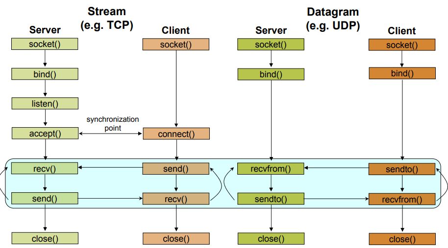

Práctica 1. Programación con sockets en C
Objetivos
- Familiarizarse con la API de sockets en C.
- Desarrollar esquemas básicos de sistemas cliente/servidor TCP y UDP utilizando C.
- Ser capaces de analizar el tráfico generado en una conexión TCP y UDP a través de Wireshark.
- Diseñar un protocolo de capa de aplicación para simular una aplicación cliente/servidor utilizando TCP y UDP para interactuar entre un host y la placa ESP32
Introducción
La historia de los sockets se remonta al origen de ARPANET, en 1971, y su posterior estandarización en forma de API dentro del sistema operativo Berkeley Software Distribution (BSD), liberado en 1983, bajo el nombre de sockets de Berkeley.
Con la popularización de Internet en los años 90, y de la mano de la World Wide Web, la programación de red sufrió también una notable evolución. Los servidores web y los navegadores no fueron (ni son) las únicas aplicaciones basadas en sockets. De hecho, los sistemas cliente/servidor son a día de hoy ubicuos e incluyen, por supuesto, a todos los protocolos de alto nivel que dan soporte a Internet de las Cosas. De hecho, a día de hoy, aunque los potocolos de alto nivel (capa de aplicación) han evolucionado hasta niveles de sofisticación no considerados en sus inicios, la API de bajo nivel sobre la que se basan se mantiene inalterada.
El tipo más común de aplicaciones basadas en sockets se basa en el paradigma cliente/servidor, donde una de las partes actúa como servidor, esperando pasivamente conexiones desde un conjunto de uno o más clientes. A continuación, veremos cómo desarrollar este tipo de paradigma desde Python, utilizando sockets Berkeley. Existen también los llamados Unix domain sockets, que permiten la comunicación directa entre procesos en el mismo host, aunque quedan fuera de nuestro interés en el ámbito de IoT.
En la práctica anterior, vimos cómo desarrollar sistemas cliente/servidor sencillos utilizando Python, tanto en sus variantes TCP como UDP. El objetivo de la presente práctica es estudiar y desarrollar componentes de red (clientes y servidores TCP y UDP) que puedan ejecutarse sobre el ESP32 haciendo uso de las facilidades propuestas por ESP-IDF. Además, demostraremos que es posible hacer interactuar clientes y servidores ejecutándose indistintamente en la máquina virtual (programados vía Python) y en la propia placa (utilizando la API de sockets de C).
La API de sockets en C
Funciones para ordenacion de bytes
Como TCP/IP es un estándar universal, y permite comunicaciones entre cualquier
plataforma y arquitectura, es necesario disponer de un método de ordenación
de los bytes para que máquinas big-endian y little-endian puedan comunicarse
de forma transparente y correcta. Para ello, se suelen proporcionar rutinas
de reordenación de bytes. En plataformas donde los datos ya están correctamente
ordenados, estas funciones no tienen ninguna funcionalidad especial, pero en
cualquier caso, es necesario utilizarlas siempre para que la comunicación
entre pares sea correcta. Las funciones típicas de reordenación de datos
son cuatro: htons, htonl, ntohs y ntohl. Su nombre explica correctamente
su semántica: host to network (short)
host to network (long), network to host (short) y network to host (long),
convirtiendo tipos de datos short y long desde el formato utilizado en
transmisiones de red (network) a representación en el host. Así, siempre
que enviemos un dato binario por la red, deberá ser transformado utilizando
hton* y cuando lo recibamos y debamos procesarlo, utilizando ntoh*.
Estructuras de datos
Antes de estudiar la API de sockets básica, es necesario mostrar el cometido
de un conjunto de estructuras de datos utilizadas comúnmente en todas ellas. La
más importante es sockaddr_in, que se define como sigue:
struct sockaddr_in
{
short sin_family;
u_short sin_port;
struct in_addr sin_addr;
char sin_zero[8];
};
La estructura in_addr utilizada en sockaddr_in se define como:
struct in_addr
{
u_long s_addr;
};
Ésta consiste en un campo de tipo unsigned long int que contiene la
dirección IP que se asociará con el socket.
La estructura sockaddr_in contiene dos campos importantes:
sin_family: que indica al socket qué familia de protocolos se utilizarán (usaremos la constanteAF_INETpara IPv4).sin_port: que indica el puerto asociado al socket.
API básica
socket()
- Prototipo:
int socket(int family, int type, int protocol);
-
Descripción: Crea un endpoint de comunicación y devuelve un descriptor de fichero para manejarlo.
-
Parámetros:
family:AF_INET(IPv4),AF_INET6(IPv6).type:SOCK_DGRAM(UDP),SOCK_STREAM(TCP),SOCK_RAW.protocol: Típicamente 0 (no usado en sockets de Internet).
-
Valor de retorno: Si tiene éxito, devuelve el descriptor de socket. Devuelve
-1si se produce un error. -
Detalles: consultad la página de manual de
socket(man socket).
bind()
- Prototipo:
int bind(int sockfd, const struct sockaddr *addr, socklen_t addrlen);
-
Descripción: Asocia un socket a una dirección especificada por
addr. Normalmente, es necesario asignar una dirección local vía esta función antes de que un socket TCP pueda recibir conexiones. -
Parámetros:
sockfd: descriptor de socket (devuelto porsocket).addr: dirección a asociar (véase estructura en sección anterior).addrlen: longitud (en bytes) de la anterior estructura.
-
Valor de retorno: Si tiene éxito, devuelve 0. Devuelve
-1si se produce un error. -
Detalles: consultad la página de manual de
bind(man bind).
listen()
- Prototipo:
int listen(int sockfd, int backlog);
-
Descripción: Marca el socket proporcionado como pasivo, esto es, un socket que podrá ser utilizado para aceptar conexiones entrantes usando la llamada
accept. -
Parámetros:
sockfd: descriptor de socket (devuelto porsocket).backlog: longitud máxima que podrá tener la cola de conexiones pendientes para el socket. Si se sobrepasa, el cliente recibirá un error en su intento de conexión.
-
Valor de retorno: Si tiene éxito, devuelve 0. Devuelve
-1si se produce un error. -
Detalles: consultad la página de manual de
listen(man listen).
accept()
- Prototipo:
int accept(int sockfd, struct sockaddr *addr, socklen_t *addrlen);
-
Descripción: En sockets orientados a conexión, extrae la primera solicitud de conexión de la cola de conexiones pendientes para el socket proporcionado, crea un nuevo socket conectado y devuelve su descriptor.
-
Parámetros:
sockfd: descriptor de socket (devuelto porsocket).addr: es un puntero a una estructura de tiposockaddr, cuyos campos serán rellenados con los datos de dirección del socket remoto.addrlen: tamaño de la estructuraaddr.
-
Valor de retorno: Si tiene éxito, devuelve el descriptor de socket. Devuelve
-1si se produce un error. -
Detalles: consultad la página de manual de
accept(man accept).
connect()
- Prototipo:
int connect(int sockfd, const struct sockaddr *addr, socklen_t addrlen);
-
Descripción: Conecta el socket proporcionada a la dirección especificada por
addr. Si el socket es UDP,addrserá la dirección a la que se enviarán los datagramas por defecto, y la única desde la que se recibirán datagramas. En caso de TCP, esta llamada inicia el proceso de conexión a la dirección especificada. -
Parámetros:
sockfd: descriptor de socket (devuelto porsocket).addr: es un puntero a una estructura de tiposockaddr, cuyos campos indican la dirección de conexión destino.addrlen: tamaño de la estructuraaddr.
-
Valor de retorno: Si tiene éxito, devuelve el descriptor de socket. Devuelve
-1si se produce un error. -
Detalles: consultad la página de manual de
connect(man connect).
send()
- Prototipo:
ssize_t send(int sockfd, const void *buf, size_t len, int flags);
-
Descripción: En un socket en estado conectado (con receptor conocido) transmite mensajes a un socket remoto.
-
Parámetros:
sockfd: descriptor de socket de envío.buf: buffer de envío donde se almacena el mensaje a enviar.len: número de bytes a enviar.
-
Valor de retorno: Si tiene éxito, devuelve el número de bytes enviados. Devuelve
-1si se produce un error. -
Detalles: consultad la página de manual de
send(man send).
recv()/recvfrom()
- Prototipos:
ssize_t recv(int sockfd, void *buf, size_t len, int flags);
ssize_t recvfrom(int sockfd, void *buf, size_t len, int flags,
struct sockaddr *src_addr, socklen_t *addrlen);
-
Descripción: Reciben mensajes desde un socket, tanto en sockets orientados como no orientados a conexión.
recvfrom, a diferencia derecv, recibe parámetros de salida adicionales que almacenan información sobre la dirección origen del mensaje. -
Parámetros:
sockfd: descriptor de socket de recepción.buf: buffer de recepción donde se almacena el mensaje a recibir.len: número de bytes a recibir.src_addr: dirección del extremo remoto del socket (origen de la comunicación).addrlen: tamaño de la estructurasrc_addr.
-
Valor de retorno: Si tiene éxito, devuelve el número de bytes recibidos. Devuelve
-1si se produce un error. -
Detalles: consultad las páginas de manual de
recvyrecv_from(man recvyman recv_from).
close()
- Prototipo:
int close(int fd);
-
Descripción: Cierra un socket.
-
Parámetros:
fd: descriptor de socket.
-
Detalles: consultad la página de manual de
close(man close).
Ejemplos
Se proporcionan a continuación ejemplos completos de uso de la API de sockets en C para el desarrollo de sistemas cliente/servidor sencillos. Para cada uno de ellos, comprueba que, efectivamente, el uso y secuencia de aplicación de cada llamada sigue las directivas de la figura:

Tarea
Compila (utilizando la oren gcc ejemplo.c -o ejemplo.x desde
una terminal) y a continuación ejecuta (./ejemplo.x) cada par
de códigos y comprueba su funcionamiento. Estudia con detenimiento el uso
de cada rutina y como efectivamente siguen las directivas marcadas
anteriormente. Si no tienes experiencia en desarrollo en C, consulta las
páginas de manual correspondientes, o con tu profesor, para resolver todas
tus dudas. Asegúrate de entender el proceso de compilación, enlazado y
ejecución de un binario.
Ejemplo: un cliente TCP
#include <arpa/inet.h>
#include <stdio.h>
#include <string.h>
#include <sys/socket.h>
#include <unistd.h>
#include <netinet/in.h>
int main() {
const int server_port = 9000;
struct sockaddr_in server_address;
memset(&server_address, 0, sizeof(server_address));
server_address.sin_family = AF_INET;
server_address.sin_addr.s_addr = inet_addr("127.0.0.1");
server_address.sin_port = htons(server_port);
int sock;
if ((sock = socket(PF_INET, SOCK_STREAM, 0)) < 0) {
printf("Error en socket\n");
return 1;
}
if (connect(sock, (struct sockaddr*)&server_address,
sizeof(server_address)) < 0) {
printf("Error en connect\n");
return 1;
}
const char* data_to_send = "Hola, RPI!!";
send(sock, data_to_send, strlen(data_to_send), 0);
int n = 0;
int len = 0, maxlen = 100;
char buffer[maxlen];
char* pbuffer = buffer;
if ((n = recv(sock, pbuffer, maxlen, 0)) > 0) {
pbuffer += n;
maxlen -= n;
len += n;
buffer[len] = '\0';
printf("Recibido: '%s'\n", buffer);
}
close(sock);
return 0;
}
Ejemplo: un servidor TCP
#include <arpa/inet.h>
#include <netinet/in.h>
#include <stdbool.h>
#include <stdio.h>
#include <string.h>
#include <unistd.h>
int main(int argc, char *argv[]) {
int SERVER_PORT = 9000;
struct sockaddr_in server_address;
memset(&server_address, 0, sizeof(server_address));
server_address.sin_family = AF_INET;
server_address.sin_port = htons(SERVER_PORT);
server_address.sin_addr.s_addr = htonl(INADDR_ANY);
int listen_sock;
if ((listen_sock = socket(PF_INET, SOCK_STREAM, 0)) < 0) {
printf("Error en socket\n");
return 1;
}
if ((bind(listen_sock, (struct sockaddr *)&server_address,
sizeof(server_address))) < 0) {
printf("Error en bind\n");
return 1;
}
int wait_size = 16;
if (listen(listen_sock, wait_size) < 0) {
printf("Error en listen\n");
return 1;
}
struct sockaddr_in client_address;
int client_address_len = 0;
while (true) {
int sock;
if ((sock =
accept(listen_sock, (struct sockaddr *)&client_address,
&client_address_len)) < 0) {
printf("Error en accept\n");
return 1;
}
int n = 0;
int len = 0, maxlen = 100;
char buffer[maxlen];
char *pbuffer = buffer;
printf("Cliente conectado con IP: %s\n",
inet_ntoa(client_address.sin_addr));
while ((n = recv(sock, pbuffer, maxlen, 0)) > 0) {
pbuffer += n;
maxlen -= n;
len += n;
printf("Recibido: '%s'\n", buffer);
send(sock, buffer, len, 0);
}
close(sock);
}
close(listen_sock);
return 0;
}
Tarea
Reproduce el funcionamiento del anterior sistema cliente/servidor echo utilizando UDP.
Capturas de tráfico vía Wireshark
Wireshark es una herramienta de código abierto ampliamente utilizada para analizar protocolos de comunicación de red en cualquiera de las capas de la pila TCP/IP (como también en otros protocolos). Wireshark implementa un amplio abanico de filtros para definir criterios de búsqueda en las capturas de tráfico, aunque de momento, en nuestro caso, no será necesario utilizar filtros específicos.
Para arrancar Wireshark en la máquina virtual proporcionada (o en cualquier instalación básica Linux), teclea en tu terminal:
$ sudo wireshark
Tras el arranque, podemos comenzar una nueva captura de tráfico a través
del menú Capture, opción Start. La pantalla de selección de interfaz
nos permitirá definir en qué interfaz de red se realizará la captura. En
nuestro caso, ya que vamos a comunicar dos procesos en la misma máquina,
elegiremos la interfaz de Loopback (lo) y comenzaremos la captura.
Tarea
Arranca Wireshark y prepara una captura sobre la interfaz de loopback de tu máquina. Ejecuta el servidor echo TCP y el cliente correspondiente, y analiza el tráfico generado. Especialmente, fíjate en el proceso de establecimiento de conexión en tres vías, paquetes de Acknowledge tras el envío de cada mensaje y, en general, en cualquier otro aspecto que consideres de interés.
Construcción de mensajes
Para enviar mensajes que encapsulen distintos tipos de datos en una sola invocación, puedes definir un mensaje como el siguiente:
typedef struct {
int x;
int y;
} mensaje;
Dando valor a cada campo y a continuación enviándolo proporcionando la dirección de inicio de la estructura, del siguiente modo:
mensaje.x = x; mensaje.y = y;
send( socketfd, &mensaje, sizeof( mensaje ), 0 );
Tarea entregable
Se pide diseñar un sistema cliente/servidor programado en C, que simule el envío de un conjunto de datos sensorizados desde un cliente hacia un servidor. El protocolo a utilizar (formato de datos enviado por la red a nivel de aplicación) debe ser propuesto por el propio alumno y descrito previamente al desarrollo. Se valorará el uso de múltiples tipos de datos tanto en el envío de datos sensorizados como de posibles respuestas por parte del servidor. Se desarrollará una versión utilizando TCP y otra equivalente usando UDP. El cliente enviará los datos de forma periódica y se éstos generarán de modo aleatorio.
A modo de entrega, se solicitan los códigos desarrollados, así como un análisis del tráfico generado, considerando la sobrecarga (en bytes reales enviados) introducida por cada protocolo de capa de transporte.
Sistemas cliente/servidor en el ESP32
La razón por la que hemos ejercitado el uso de la API de sockets desde C en Linux es que la implementación de la pila TCP/IP en ESP-IDF (llamada Lightweight TCP/IP (lwIP)) implementa al 100% dicha API. Por tanto, tanto la estructura básica de un firmware que implemente un cliente o servidor como la API utilizada permanece inalterada.
En esta última sección, se pide trabajar con dos ejemplos básicos de implementación de sistemas cliente/servidor UDP y TCP sobre el ESP32, con el objetivo de estudiar su funcionalidad, comprobar su interoperabilidad y realizar modificaciones para adaptarlas a una hipotética aplicación IoT.
Cliente/servidor UDP en el ESP32
En esta parte, trabajarás con dos ejemplos proporcionados dentro de la colección de ejemplos de ESP-IDF. Por tanto, copia en tu espacio de trabajo (fuera del árbol principal de ESP-IDF) los ejemplos:
- Servidor UDP:
examples/protocols/sockets/udp_server/ - Cliente UDP:
examples/protocols/sockets/udp_client/
Estructura general
Observa sus códigos (udp_server.c para el servidor, y udp_client.c para el
cliente). Comprueba que, tanto la estructura básica de ambos componentes como
las invocaciones a la API de sockets concuerdan con las que vimos para el
sistema echo programado en C.
Acerca de la tarea principal (función app_main) observa que realiza
una serie de llamadas a APIs de configuración de algunos subsistemas de
FreeRTOS, principalmente:
// Inicializa la partición NVS (Non-volatile storage) por defecto.
ESP_ERROR_CHECK(nvs_flash_init());
// Inicializa la infraestructura ESP-NETIF.
ESP_ERROR_CHECK(esp_netif_init());
// Crea un bucle de eventos por defecto.
ESP_ERROR_CHECK(esp_event_loop_create_default());
/* Esta función configura WiFi o Ethernet, tal y como seleccionemos via menuconfig.
*/
ESP_ERROR_CHECK(example_connect());
xTaskCreate(udp_server_task, "udp_server", 4096, NULL, 5, NULL);
-
example_connect(), función que no forma parte de ESP-IDF, establece una conexión WiFi o Ethernet. La función es bloqueante, y retorna cuando se ha conseguido establecer una conexión. -
Las características de la conexión WiFi (SSID y contraseña) se deben proporcionar a través de
menuconfig. -
El objetivo de ESP-NETIF es proporcionar una capa de abstracción por encima de la pila TCP/IP, de modo que pueda migrarse la pila sin que los códigos del usuario cambien. Puedes consultar su documentación en la página oficial.
-
Por último, se crea una tarea que ejecutará la lógica del servidor (lo mismo ocurre en el cliente).
-
Observa que, en todo el código, los mensajes de error se anotan utilizando la macro
ESP_LOGEy los informativos conESP_LOGI; intenta seguir este convenio en tus códigos.
Despliegue. Opción 1
En este caso, desplegarás el cliente en un ESP32 y el servidor en otro. Si no dispones de dos ESP32, puedes trabajar con un compañero.
En cualquier caso, ambos ESP32 deben pertenecer a la misma red inalámbrica, por lo que deberán conectarse a un mismo punto de acceso (el profesor te proporcionará los datos, o simplemente puedes utilizar tu punto de acceso doméstico). Configura los siguientes puntos de la infraestructura:
-
Configura el SSID y contraseña del punto de acceso vía
menuconfigantes de compilar y flashear el código tanto en el cliente como en el servidor. -
En el servidor, configura vía
menuconfigel puerto sobre el que escuchará. -
Arranca primero el nodo servidor y apunta la IP proporcionada por el punto de acceso; utilízala en el cliente para configurar la IP destino de la comunicación. No olvides configurar también el puerto destino de acuerdo al configurado en el servidor vía
menuconfig.
Ên este punto, podrás arrancar el cliente y deberías estar comunicando dos nodos ESP32 vía UDP.
Despliegue. Opción 2
Si sólo dispones de un nodo, o si simplemente quieres probar otra forma de comunicación en la que uno de los equipos es un PC, puedes utilizar alguna de las herramientas del sistema:
Nota
Ten en cuenta que portátil (es decir, máquina virtual) y ESP32 deben pertenecerá la misma red. Para conseguirlo, para tu máquina virtual y añade una nueva interfaz de red de tipo bridge conectada a la interfaz Wifi física de tu PC. Así, tendrás una interfaz con IP en la misma red, otorgada directamente por tu punto de acceso.
- Para recibir un paquete UDP a través de un puerto (es decir, emular un servidor UDP):
nc -ul -p 3333
- Para enviar un paquete UDP a una IP/puerto remotos (es decir, emular un cliente):
nc -u IP_REMOTA 3333
En el directorio scripts dispones también de pequeños ejemplos de clientes y
servidores UDP Python que puedes también utilizar.
Cliente/servidor TCP en el ESP32
El despliegue de cliente y servidor TCP es equivalente al UDP.
- Para recibir un paquete TCP a través de un puerto (es decir, emular un servidor TCP):
nc -l IP -p 3333
- Para enviar un paquete TCP a una IP/puerto remotos (es decir, emular un cliente):
nc IP 3333
En el directorio scripts dispones también de pequeños ejemplos de clientes y
servidores TCP Python que puedes también utilizar.
Tarea
Experimenta con los ejemplos proporcionados en ESP-IDF (cliente/servidor TCP y UDP) y consigue ejecutar todos los elementos en la placa. Si sólo dispones de una placa, utiliza la máquina virtual como cliente/servidor para comprobar el correcto funcionamiento de cada código.
Tarea entregable
En este punto, deberías disponer de un conjunto de códigos que implementan sistemas cliente/servidor tanto en un host (utilizando Python y/o C) como en la placa ESP32 (utilizando C y ESP-IDF), y deberías haber comprobado su correcto funcionamiento.
Específicamente, dispondrás de:
-
Sistema cliente/servidor desarrollado en la Práctica 1, escrito en Python e implementando un protocolo básico de aplicacion (tipo de mensaje) propuesto por ti.
-
Código básico en C para implementación de un servidor/cliente echo programado en C, cuyos códigos se proporcionan en este boletín.
-
Códigos básicos en C/ESP-IDF para implementar servidores/clientes echo sobre el ESP32.
Como tarea entregable, se pide que adaptes tu entrega de la Práctica 1 para que tanto cliente como servidor puedan funcionar en el host (bien usando tu implementación Python, o bien utilizando una nueva implementación en C) o en el ESP32. Se entregarán los códigos y una breve memoria con capturas de tráfico que demuestren el correcto funcionamiento del sistema.